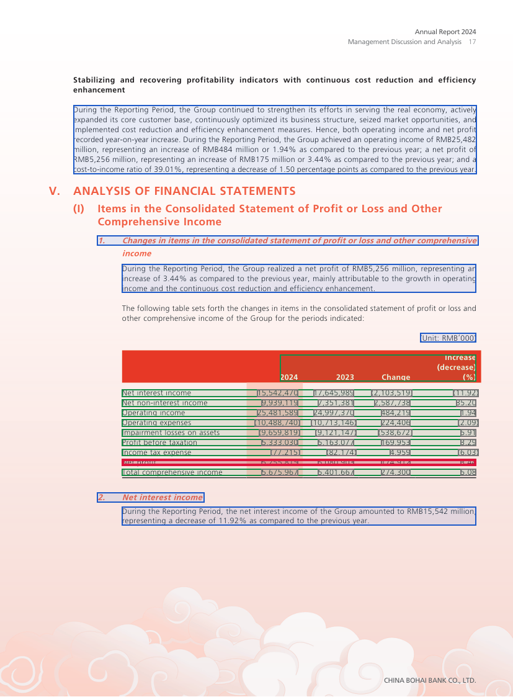

Every answer cites the page, the box and the quote it came from — and an answer whose numbers are not in those quotes is withheld.

Every numeric unit boxed; the net-profit row highlighted.
PDF ─► Docling (layout, tables) ─┐
└► PyMuPDF (text, boxes) ┴► UNITS (page, box, quote, value)
│
RETRIEVAL BM25 + bge-small → RRF → rerank
│
AGENT tools: search, read row, read table
│
VERIFICATION numbers must be in cited quotes
│ year column, section scope
▼
ANSWER or REFUSAL
| questions | correct | wrong |
|---|---|---|
| uses the report's own wording (31) | 0.94 | 0–1 |
| concept questions (14) | 0.86 | 0–1 |
| fair paraphrases (19) | 0.67 | 4–6 |
| same, stronger model | 0.76 | 2 |
Retrieval is not the bottleneck: the right figure is in the top 5 for 80–90% of questions.
| with the evidence removed | check off | check on |
|---|---|---|
| invented a number in no quote | 4 | 0 shown |
| real number from the wrong row, year or entity | 4 | 4 still shown |
Faithful and wrong is the failure mode that survives. That is the contribution.
| move | what it buys |
|---|---|
| second English filing | generalisation — the missing evidence |
| multilingual encoder | the Chinese report becomes usable |
| graph layer | linking a row to its statement, entity and period |
The graph is the natural answer to the finding: scope is what the check cannot see.
# the whole pipeline, two questions, ~30 s export DEEPSEEK_API_KEY=sk-... ./scripts/demo.sh # the clickable bench streamlit run app.py
Repository: github.com/ivanlyf0712/fyp-citation-first-rag
Results, audits and negative results: RESULTS.md · ENFORCEMENT.md · AUDIT.md